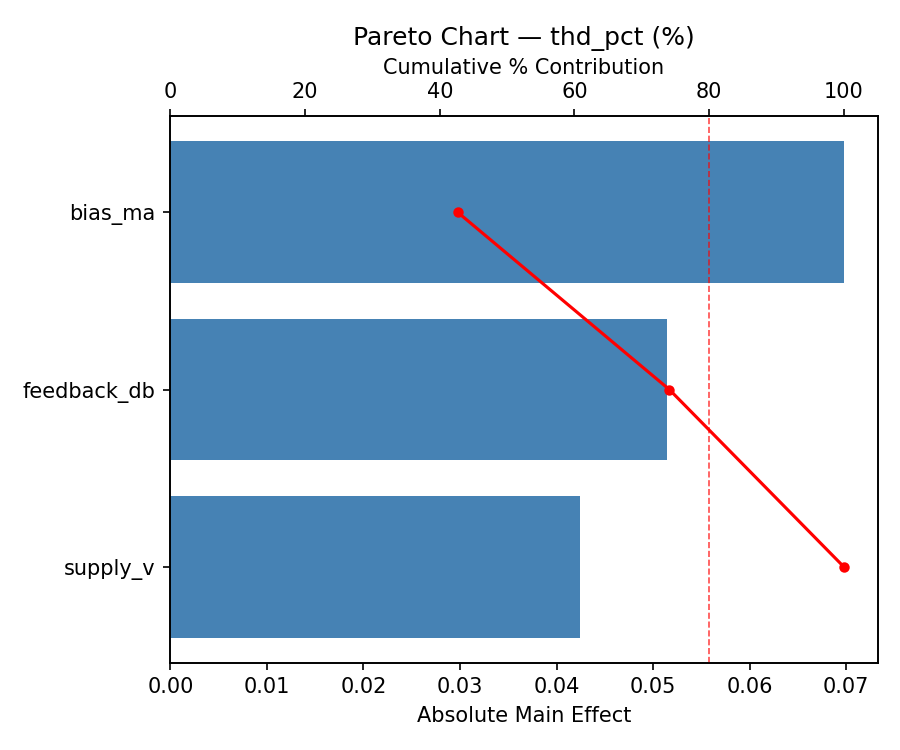
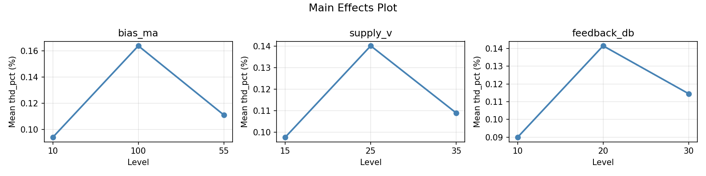
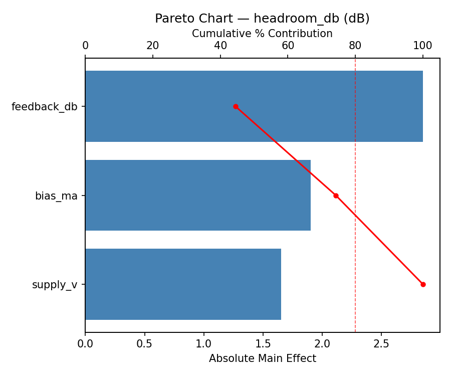
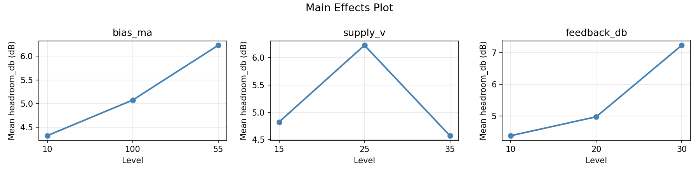
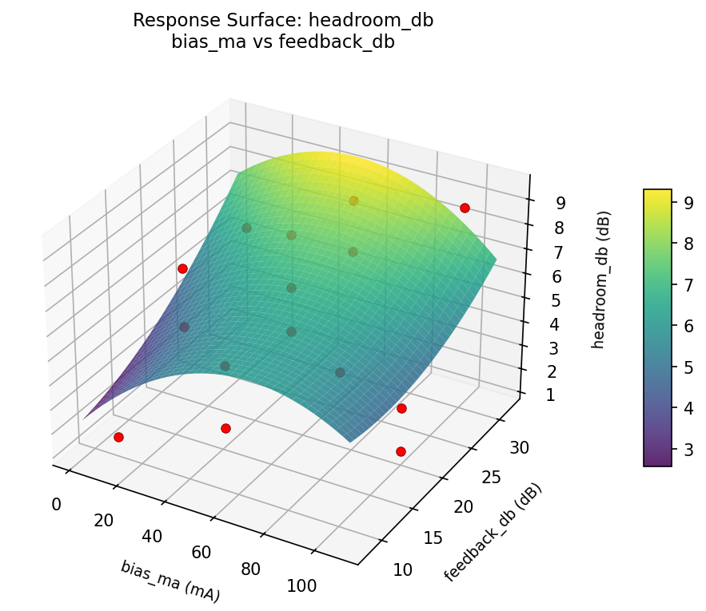
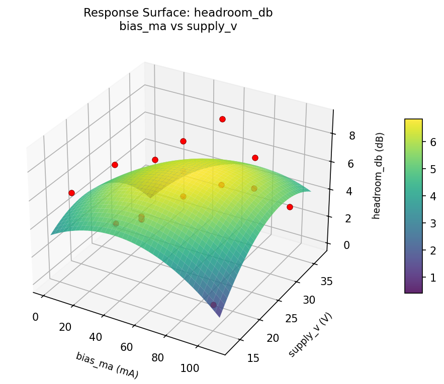
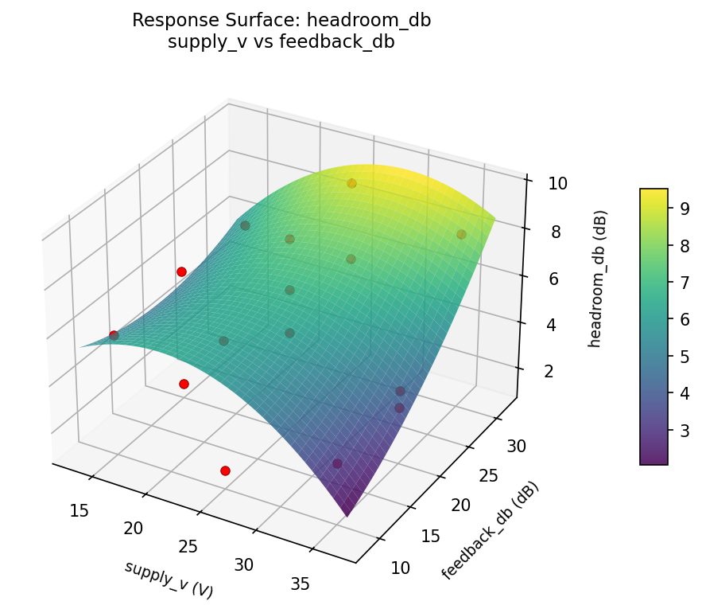
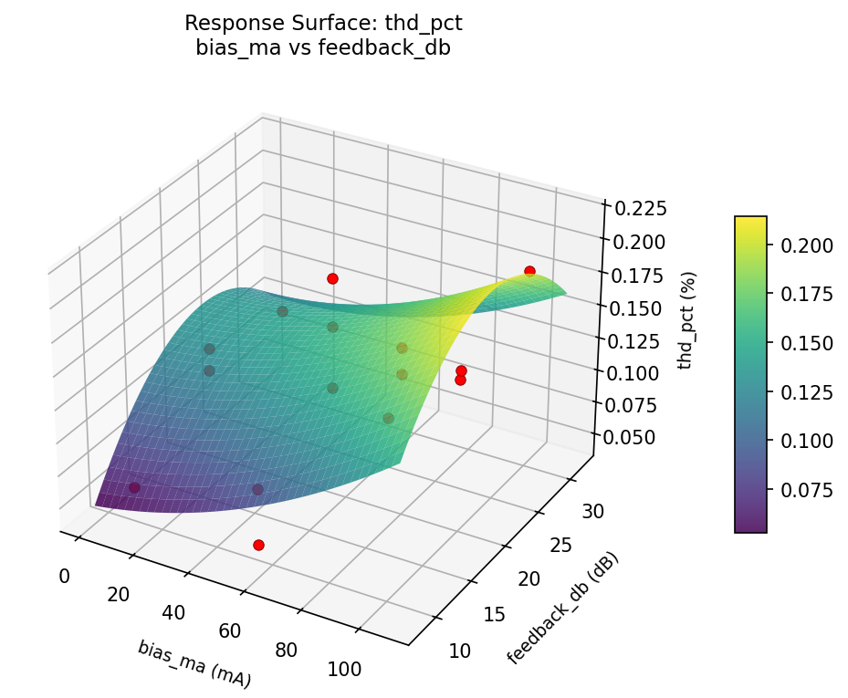
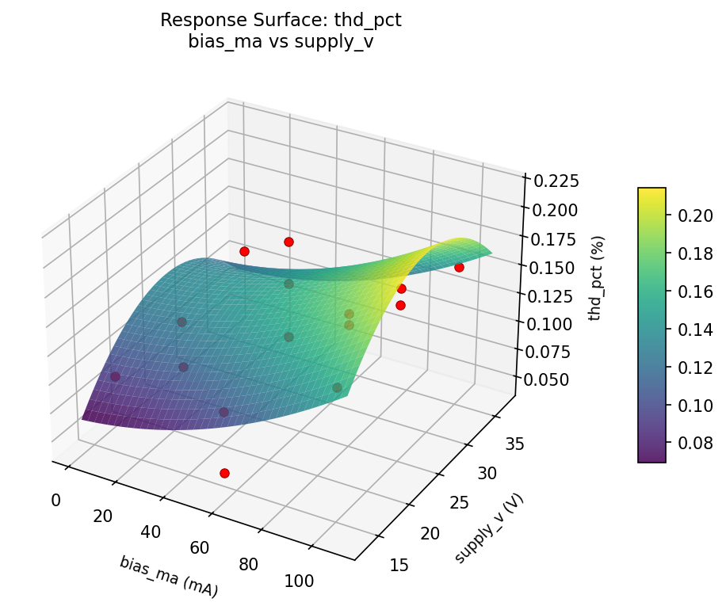
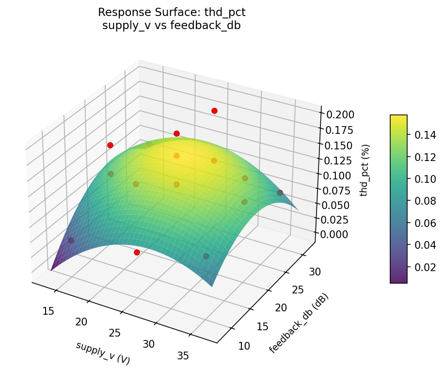

Summary
This experiment investigates audio amplifier biasing. Box-Behnken design to maximize THD+N and headroom by tuning bias current, supply voltage, and feedback ratio.
The design varies 3 factors: bias ma (mA), ranging from 10 to 100, supply v (V), ranging from 15 to 35, and feedback db (dB), ranging from 10 to 30. The goal is to optimize 2 responses: thd pct (%) (minimize) and headroom db (dB) (maximize). Fixed conditions held constant across all runs include topology = class_AB, load = 8ohm.
A Box-Behnken design was chosen because it efficiently fits quadratic models with 3 continuous factors while avoiding extreme corner combinations — requiring only 15 runs instead of the 8 needed for a full factorial at two levels.
Quadratic response surface models were fitted to capture potential curvature and factor interactions. The RSM contour plots below visualize how pairs of factors jointly affect each response.
Key Findings
For thd pct, the most influential factors were bias ma (42.6%), feedback db (31.4%), supply v (25.9%). The best observed value was 0.045 (at bias ma = 100, supply v = 15, feedback db = 20).
For headroom db, the most influential factors were feedback db (44.5%), bias ma (29.7%), supply v (25.8%). The best observed value was 9.0 (at bias ma = 55, supply v = 25, feedback db = 20).
Recommended Next Steps
- Run confirmation experiments at the predicted optimal settings to validate the model.
- Consider whether any fixed factors should be varied in a future study.
Experimental Setup
Factors
| Factor | Low | High | Unit |
|---|
bias_ma | 10 | 100 | mA |
supply_v | 15 | 35 | V |
feedback_db | 10 | 30 | dB |
Fixed: topology = class_AB, load = 8ohm
Responses
| Response | Direction | Unit |
|---|
thd_pct | ↓ minimize | % |
headroom_db | ↑ maximize | dB |
Configuration
{
"metadata": {
"name": "Audio Amplifier Biasing",
"description": "Box-Behnken design to maximize THD+N and headroom by tuning bias current, supply voltage, and feedback ratio"
},
"factors": [
{
"name": "bias_ma",
"levels": [
"10",
"100"
],
"type": "continuous",
"unit": "mA"
},
{
"name": "supply_v",
"levels": [
"15",
"35"
],
"type": "continuous",
"unit": "V"
},
{
"name": "feedback_db",
"levels": [
"10",
"30"
],
"type": "continuous",
"unit": "dB"
}
],
"fixed_factors": {
"topology": "class_AB",
"load": "8ohm"
},
"responses": [
{
"name": "thd_pct",
"optimize": "minimize",
"unit": "%"
},
{
"name": "headroom_db",
"optimize": "maximize",
"unit": "dB"
}
],
"settings": {
"operation": "box_behnken",
"test_script": "use_cases/275_audio_amplifier/sim.sh"
}
}
Experimental Matrix
The Box-Behnken Design produces 15 runs. Each row is one experiment with specific factor settings.
| Run | bias_ma | supply_v | feedback_db |
|---|
| 1 | 55 | 15 | 10 |
| 2 | 55 | 25 | 20 |
| 3 | 100 | 25 | 30 |
| 4 | 100 | 25 | 10 |
| 5 | 55 | 25 | 20 |
| 6 | 55 | 25 | 20 |
| 7 | 10 | 25 | 30 |
| 8 | 100 | 15 | 20 |
| 9 | 55 | 15 | 30 |
| 10 | 100 | 35 | 20 |
| 11 | 10 | 25 | 10 |
| 12 | 55 | 35 | 30 |
| 13 | 10 | 15 | 20 |
| 14 | 10 | 35 | 20 |
| 15 | 55 | 35 | 10 |
Step-by-Step Workflow
1
Preview the design
$ python doe.py info --config use_cases/275_audio_amplifier/config.json
2
Generate the runner script
$ python doe.py generate --config use_cases/275_audio_amplifier/config.json \
--output use_cases/275_audio_amplifier/results/run.sh --seed 42
3
Execute the experiments
$ bash use_cases/275_audio_amplifier/results/run.sh
4
Analyze results
$ python doe.py analyze --config use_cases/275_audio_amplifier/config.json
5
Get optimization recommendations
$ python doe.py optimize --config use_cases/275_audio_amplifier/config.json
6
Generate the HTML report
$ python doe.py report --config use_cases/275_audio_amplifier/config.json \
--output use_cases/275_audio_amplifier/results/report.html
Features Exercised
| Feature | Value |
|---|
| Design type | box_behnken |
| Factor types | continuous (all 3) |
| Arg style | double-dash |
| Responses | 2 (thd_pct ↓, headroom_db ↑) |
| Total runs | 15 |
Analysis Results
Generated from actual experiment runs using the DOE Helper Tool.
Response: thd_pct
Top factors: bias_ma (42.6%), feedback_db (31.4%), supply_v (25.9%).
Pareto Chart

Main Effects Plot

Response: headroom_db
Top factors: feedback_db (44.5%), bias_ma (29.7%), supply_v (25.8%).
Pareto Chart

Main Effects Plot

Response Surface Plots
3D surfaces fitted with quadratic RSM. Red dots are observed data points.
headroom db bias ma vs feedback db

headroom db bias ma vs supply v

headroom db supply v vs feedback db

thd pct bias ma vs feedback db

thd pct bias ma vs supply v

thd pct supply v vs feedback db

Full Analysis Output
RSM surface: rsm_thd_pct_bias_ma_vs_supply_v.png
RSM surface: rsm_thd_pct_bias_ma_vs_feedback_db.png
RSM surface: rsm_thd_pct_supply_v_vs_feedback_db.png
RSM surface: rsm_headroom_db_bias_ma_vs_supply_v.png
RSM surface: rsm_headroom_db_bias_ma_vs_feedback_db.png
RSM surface: rsm_headroom_db_supply_v_vs_feedback_db.png
=== Main Effects: thd_pct ===
Factor Effect Std Error % Contribution
--------------------------------------------------------------
bias_ma 0.0698 0.0118 42.6%
feedback_db 0.0514 0.0118 31.4%
supply_v 0.0424 0.0118 25.9%
=== Summary Statistics: thd_pct ===
bias_ma:
Level N Mean Std Min Max
------------------------------------------------------------
10 4 0.0940 0.0247 0.0590 0.1170
100 4 0.1638 0.0155 0.1480 0.1830
55 7 0.1110 0.0515 0.0450 0.1960
supply_v:
Level N Mean Std Min Max
------------------------------------------------------------
15 4 0.0978 0.0421 0.0450 0.1480
25 7 0.1401 0.0501 0.0590 0.1960
35 4 0.1090 0.0351 0.0770 0.1550
feedback_db:
Level N Mean Std Min Max
------------------------------------------------------------
10 4 0.0900 0.0555 0.0450 0.1690
20 7 0.1414 0.0332 0.1000 0.1960
30 4 0.1145 0.0468 0.0770 0.1830
=== Main Effects: headroom_db ===
Factor Effect Std Error % Contribution
--------------------------------------------------------------
feedback_db 2.8500 0.6233 44.5%
bias_ma 1.9036 0.6233 29.7%
supply_v 1.6536 0.6233 25.8%
=== Summary Statistics: headroom_db ===
bias_ma:
Level N Mean Std Min Max
------------------------------------------------------------
10 4 4.3250 2.1562 1.5000 6.2000
100 4 5.0750 3.5065 1.3000 9.0000
55 7 6.2286 1.8670 3.3000 8.8000
supply_v:
Level N Mean Std Min Max
------------------------------------------------------------
15 4 4.8250 2.3557 1.3000 6.2000
25 7 6.2286 2.5585 1.5000 9.0000
35 4 4.5750 2.3684 3.1000 8.1000
feedback_db:
Level N Mean Std Min Max
------------------------------------------------------------
10 4 4.3750 2.4377 1.5000 6.9000
20 7 4.9714 2.5005 1.3000 8.8000
30 4 7.2250 1.5756 5.8000 9.0000
Pareto chart (thd_pct): use_cases/275_audio_amplifier/results/analysis/pareto_thd_pct.png
Pareto chart (headroom_db): use_cases/275_audio_amplifier/results/analysis/pareto_headroom_db.png
Main effects (thd_pct): use_cases/275_audio_amplifier/results/analysis/main_effects_thd_pct.png
Main effects (headroom_db): use_cases/275_audio_amplifier/results/analysis/main_effects_headroom_db.png
Optimization Recommendations
=== Optimization: thd_pct ===
Direction: minimize
Best observed run: #3
bias_ma = 100
supply_v = 15
feedback_db = 20
Value: 0.045
RSM Model (linear, R² = 0.1384, Adj R² = -0.0966):
Coefficients:
intercept +0.1205
bias_ma -0.0176
supply_v -0.0137
feedback_db +0.0029
RSM Model (quadratic, R² = 0.3660, Adj R² = -0.7751):
Coefficients:
intercept +0.1430
bias_ma -0.0176
supply_v -0.0138
feedback_db +0.0029
bias_ma*supply_v +0.0070
bias_ma*feedback_db +0.0283
supply_v*feedback_db +0.0090
bias_ma^2 -0.0086
supply_v^2 -0.0274
feedback_db^2 -0.0061
Curvature analysis:
supply_v coef=-0.0274 negligible curvature
bias_ma coef=-0.0086 negligible curvature
feedback_db coef=-0.0061 negligible curvature
Predicted optimum (from linear model):
bias_ma = 10
supply_v = 15
feedback_db = 20
Predicted value: 0.1519
Model quality: Weak fit — consider adding center points or using a different design.
Factor importance:
1. supply_v (effect: 0.0, contribution: 49.0%)
2. bias_ma (effect: 0.0, contribution: 43.1%)
3. feedback_db (effect: 0.0, contribution: 7.9%)
=== Optimization: headroom_db ===
Direction: maximize
Best observed run: #15
bias_ma = 55
supply_v = 25
feedback_db = 20
Value: 9.0
RSM Model (linear, R² = 0.3187, Adj R² = 0.1329):
Coefficients:
intercept +5.4133
bias_ma -0.1500
supply_v -1.5250
feedback_db +0.9500
RSM Model (quadratic, R² = 0.5204, Adj R² = -0.3430):
Coefficients:
intercept +5.4333
bias_ma -0.1500
supply_v -1.5250
feedback_db +0.9500
bias_ma*supply_v -0.1250
bias_ma*feedback_db -0.8250
supply_v*feedback_db +0.6750
bias_ma^2 -1.3292
supply_v^2 +0.2208
feedback_db^2 +1.0708
Curvature analysis:
bias_ma coef=-1.3292 concave (has a maximum)
feedback_db coef=+1.0708 convex (has a minimum)
supply_v coef=+0.2208 convex (has a minimum)
Notable interactions:
bias_ma*feedback_db coef=-0.8250 (antagonistic)
supply_v*feedback_db coef=+0.6750 (synergistic)
Predicted optimum (from linear model):
bias_ma = 55
supply_v = 15
feedback_db = 30
Predicted value: 7.8883
Model quality: Weak fit — consider adding center points or using a different design.
Factor importance:
1. supply_v (effect: 3.1, contribution: 45.4%)
2. feedback_db (effect: 2.1, contribution: 31.2%)
3. bias_ma (effect: 1.6, contribution: 23.4%)